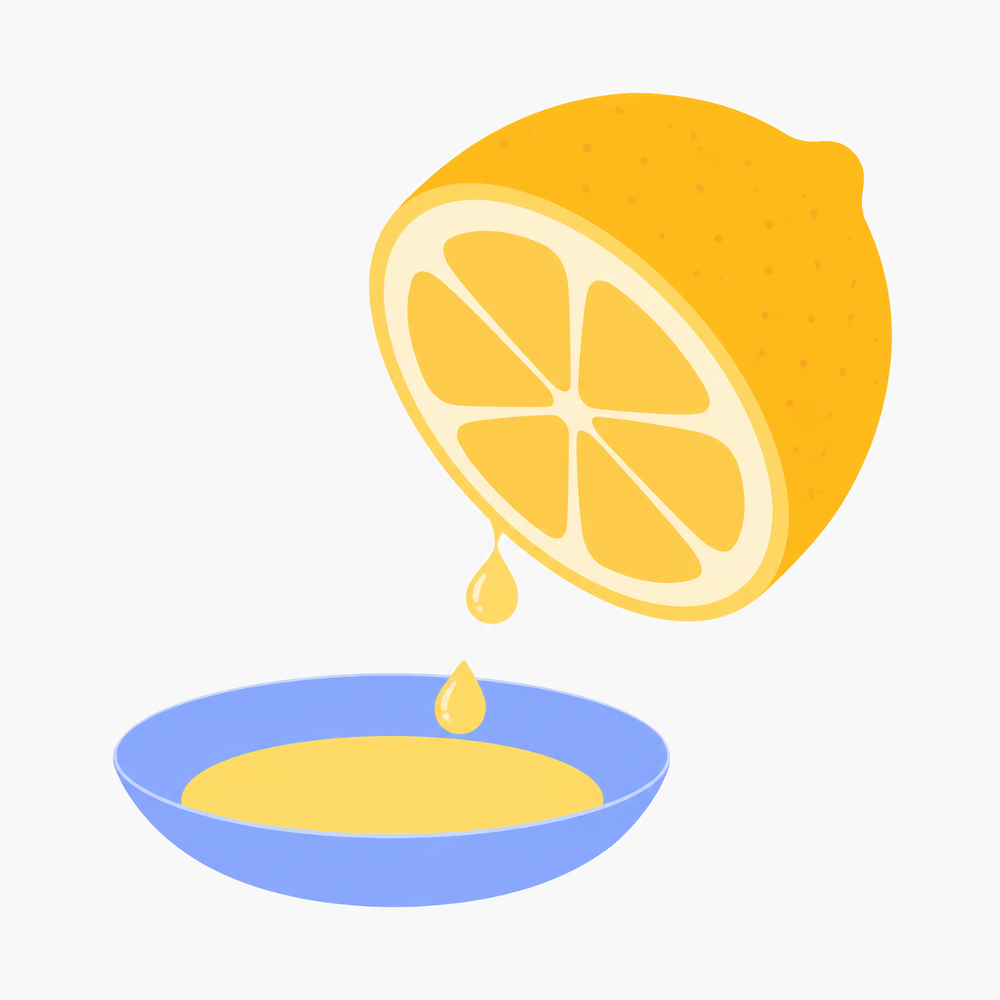
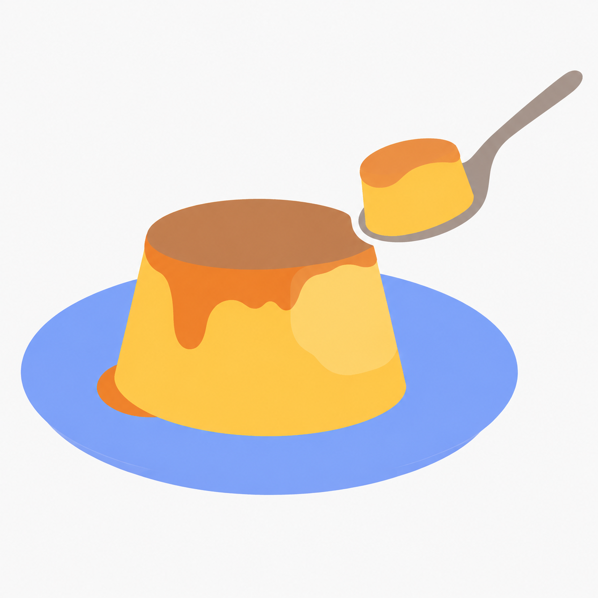
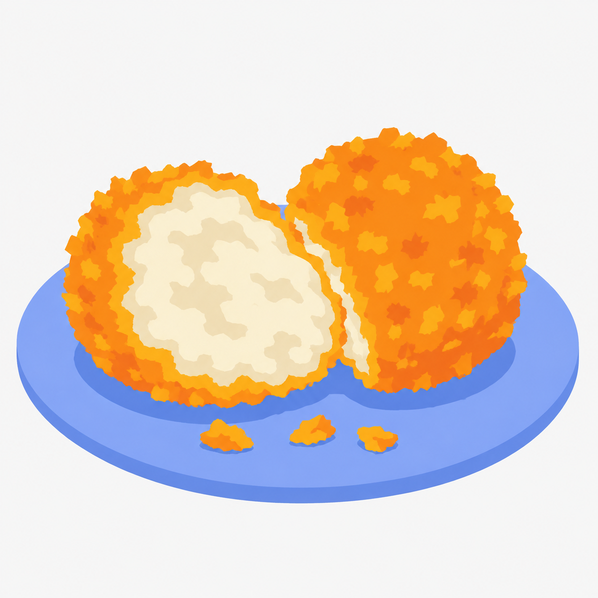
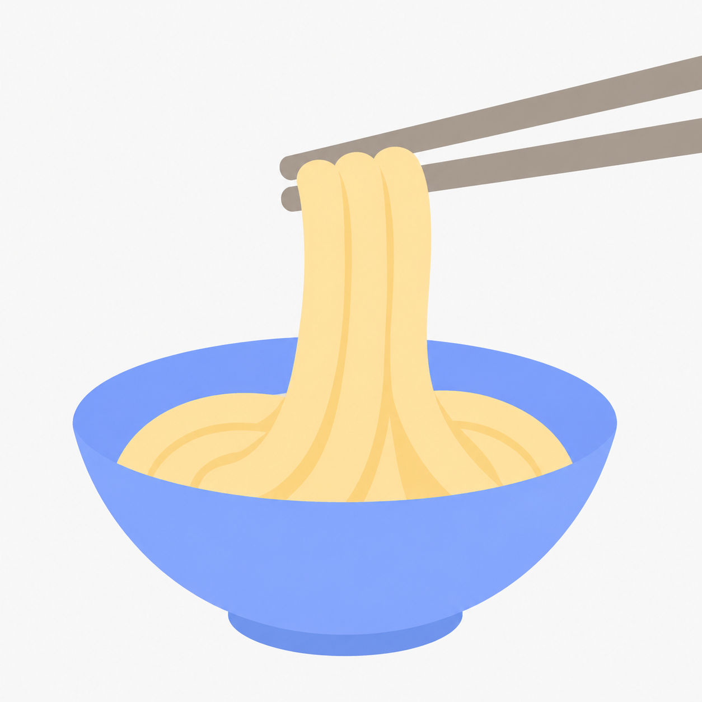
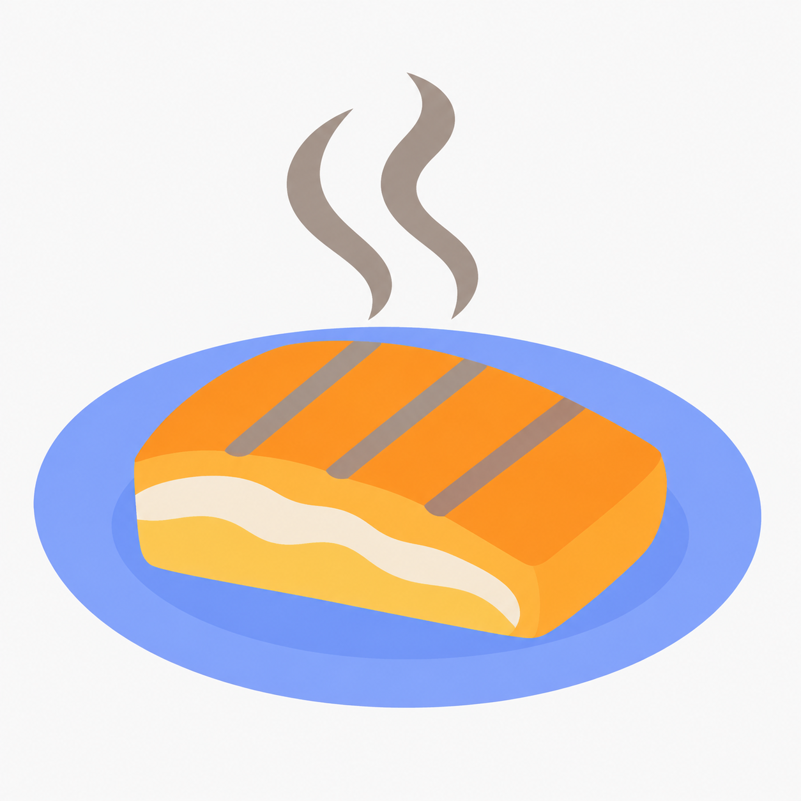
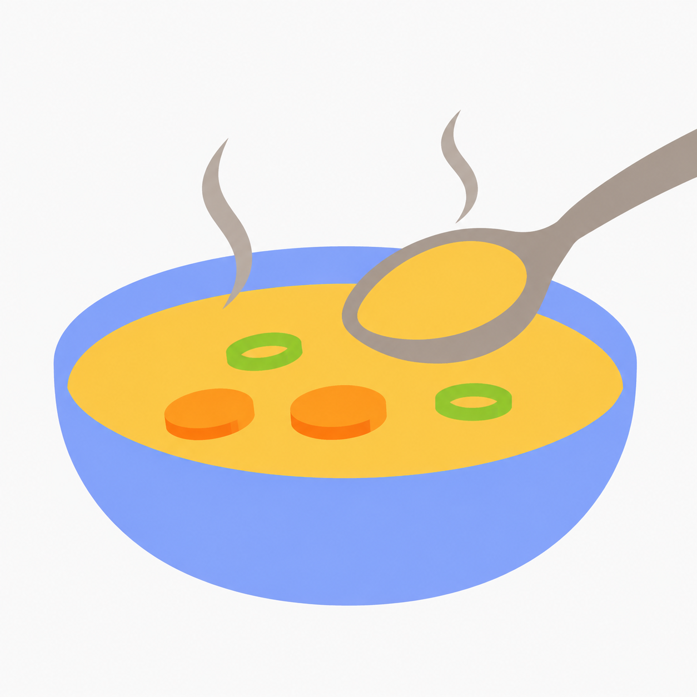

산뜻한 산미는 어느 정도로 느껴졌나요?
레몬즙과 소스 · 카드 이미지 60 × 60
팔레트 블룸의 색감을 음식과 식사 동작으로 확장한 일러스트 6종.

레몬즙과 소스 · 카드 이미지 60 × 60

캐러멜 푸딩 한입 · 카드 이미지 60 × 60

바삭한 튀김의 단면 · 카드 이미지 60 × 60

젓가락으로 들어 올린 굵은 면 · 카드 이미지 60 × 60

훈연한 생선과 연기 · 카드 이미지 60 × 60

따뜻한 수프 한 숟가락 · 카드 이미지 60 × 60